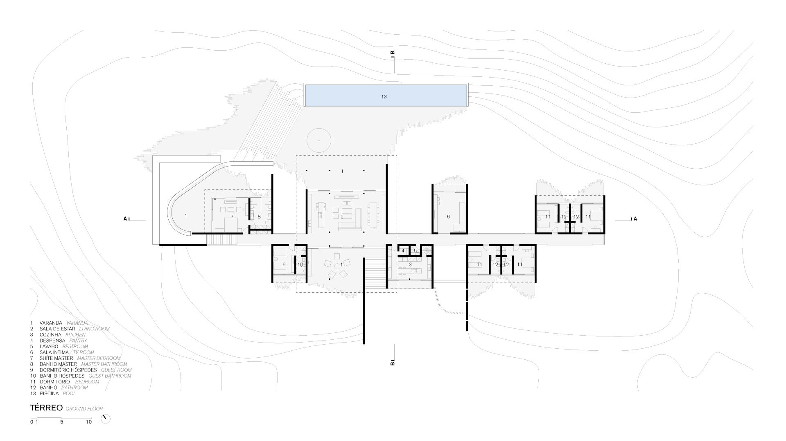

平面图还原耗时
墙体、门洞、房间关系和比例一旦手工摆错，后面的动线、陈设和截图都会反复返工。
对关卡策划来说，真正痛的是“想法有了，但 UE 里还没形”。ue5agent 把输入、生成、预览、验证和修正拆成可检查步骤，让白盒从概念变成能讨论的关卡样稿。
墙体、门洞、房间关系和比例一旦手工摆错，后面的动线、陈设和截图都会反复返工。
通道宽度、门窗避让、出生点到目标点可达、掩体距离都需要验收，不应只靠一张截图判断。
蓝图触发器、C++ 机制和测试结果需要翻译成策划能复盘的语言，避免“代码做了什么”说不清。
给策划看的页面不需要先讲内部类名，但底层必须保证每次生成都有来源、有验收、有失败处理，才能放心把 AI 输出放进 UE 工作流。
把策划目标拆成可执行步骤，每一步都带输入、工具范围、验收条件和失败处理策略。
读蓝图、生成白盒、跑测试、取截图都走受控工具，危险操作需要明确权限和回滚路径。
白盒落地、编译、运行、功能测试、路径验证和视口截图都在真实工程里运行。
资产清单、关卡尺度规则、运行日志和评测基线会被复用，下一次生成不从零开始。
输入先被整理成空间目标、玩法目标和可验收条件。
每一步只处理当前需要的资产、关卡、蓝图或机制任务，减少误改范围。
生成结构、读取蓝图、编写机制、运行测试和取截图都回传明确结果。
路径、几何、截图、日志和测试结果汇总后，才进入可交付报告。
证据缺失、工具失败或结果不可信时，会重试、回滚或明确告诉策划卡在哪里。
展示顺序按策划工作流组织：先把空间做出来，再检查能不能走、能不能玩，最后把蓝图和 C++ 机制变成协作材料。
从本地平面图提取墙线、房间关系和门洞，生成可审查预览，再转成 UE 白盒结构。
用门洞端点和墙体方向反推尺度，检查断角、孤立墙和重叠墙，避免白盒结构一开始就偏掉。
生成后检查出生点到目标点是否可达，结合 NavMesh、路线长度和关键节点报告说明哪里堵住了。
按活动区、储物墙、桌椅、掩体和门窗避让规则生成草案，让房间不只是空盒子。
默认输出俯视、等距和 UE 视口证据，方便策划看房间尺度、门洞关系和路线清晰度。
只读解释触发器、变量、事件流和引用关系，帮助策划判断某个关卡行为到底由谁控制。
把新机制做成可编译、可运行、可暴露给蓝图的实现，再用日志、测试和运行结果给策划确认。
把截图、路径验证、几何问题、测试结果和恢复动作汇总，方便下一轮改需求或改关卡。
这条展示线适合给策划看：输入是什么、生成了什么、哪里能走、哪些截图能作为下一轮讨论依据。

先识别墙线、房间和门窗，给策划一张可以核对的结构稿，而不是直接把不确定结果塞进关卡。
用俯视和等距视角看房间、门洞、主路线、掩体和陈设草案，先判断关卡结构是否值得继续打磨。
进入真实编辑器后继续检查可达性、截图取景、路径堵塞和测试结果，让讨论有明确依据。
每张卡都对应一个可替换成真实截图的位置。先用占位图说明展示内容，后续可以逐步换成 UE 视口、蓝图阅读面板和验收报告截图。
策划给出平面图或玩法目标，工具交付可核对的关卡样稿、问题清单和下一轮修改依据。
展示从平面图提取墙体、房间拓扑、门窗开口和尺度标定，再生成 UE 白盒结构的结果。
把“能不能走到目标点”变成可检查结果，报告路线是否被门洞、陈设、楼梯或通道宽度卡住。
在房间结构上补桌椅、储物墙、掩体和活动区，同时避让门窗、主路线和导航通道。
把触发器、事件流、变量和引用关系解释成策划能复盘的说明，同时坚持只读边界，不直接改蓝图节点。
把新玩法机制做成可编译、可运行、可暴露给蓝图的实现，并用测试、日志和运行截图给策划确认。
把截图、路径验证、几何问题、测试结果和恢复动作汇总成一页，告诉策划“哪里通过、哪里还要改”。
对策划展示时，重点是白盒是否可走、截图是否能看、问题是否可复盘；测试规模和命令输出作为可信度支撑。
PS> .\scripts\check.ps1 uv run ruff check src tests uv run ruff format src tests --check uv run pytest -q PS> .\scripts\check.ps1 -Types uv run mypy src CI: uv sync --dev CI: ruff + format check + mypy + pytest
SPC/DST 标准空间评测通过，覆盖房间结构、动线约束、几何校验和视觉审查结果。
首份 UE 在线评测基线通过，记录平均迭代 1.5、人工干预 0，说明链路能在真实编辑器里跑完。
静态扫描到 44 个 tests/test_*.py，覆盖核心循环、权限、白盒、平面图和安全边界。
当前静态扫描到 663 个 test_ 函数，用来防止工具、权限、白盒生成和报告链路在迭代中退化。
关键依据：README 当前状态、docs/roadmap.md 已交付能力与白盒优化条目、CHANGELOG.md 未发布段、.github/workflows/ci.yml、scripts/check.ps1。平面图能力仍按 v1 / 拓扑优先表述。
页面不需要把内部阶段讲满，只要让读者知道哪些功能已经能形成作品截图，哪些还在增强体验和稳定性。
给策划或技术美术看时，重点是你能把模糊需求变成可检查关卡产物，也能把工程能力翻译成对设计迭代有用的证据。
这个页面的重点不是把所有内部实现讲完，而是让读者快速判断它能不能帮助关卡白盒从想法走到 UE 验收。